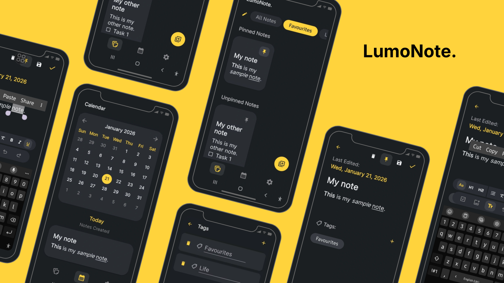
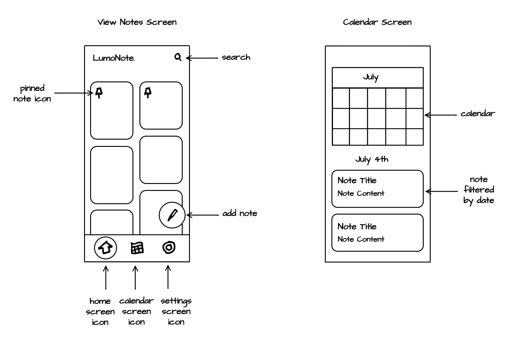
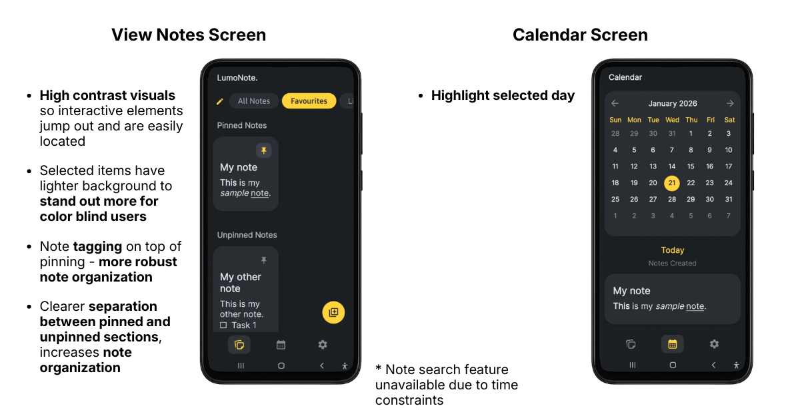
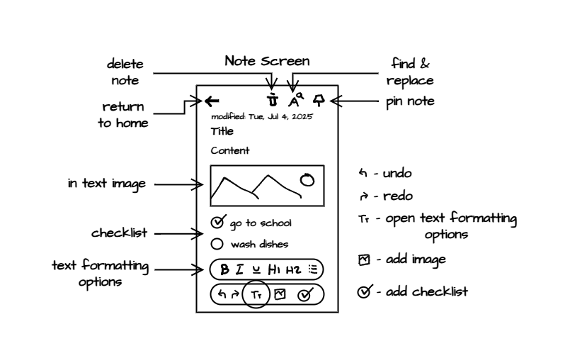
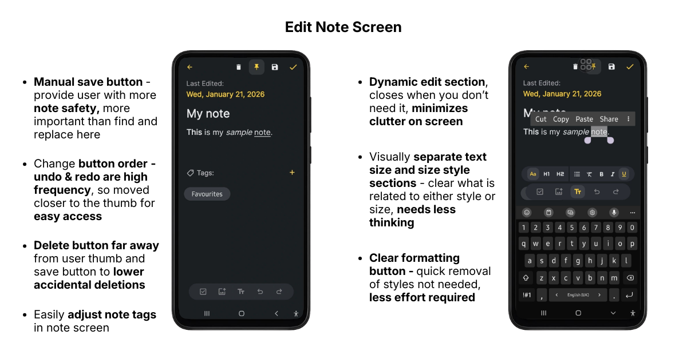
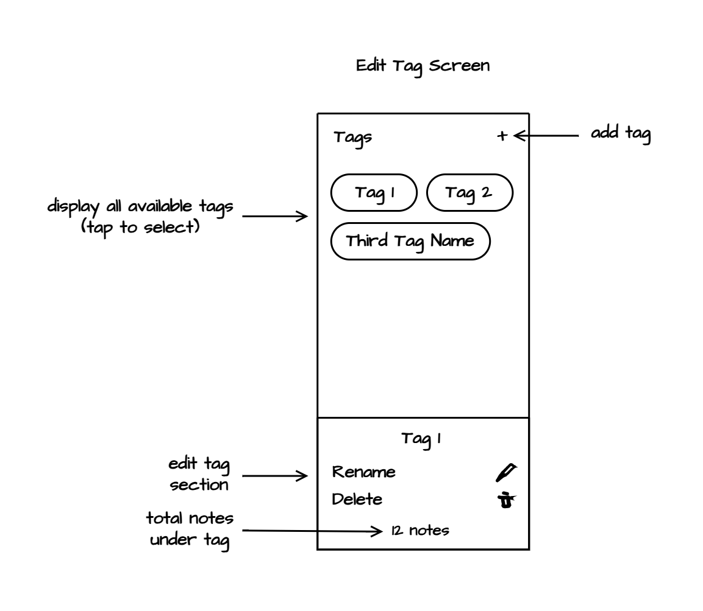
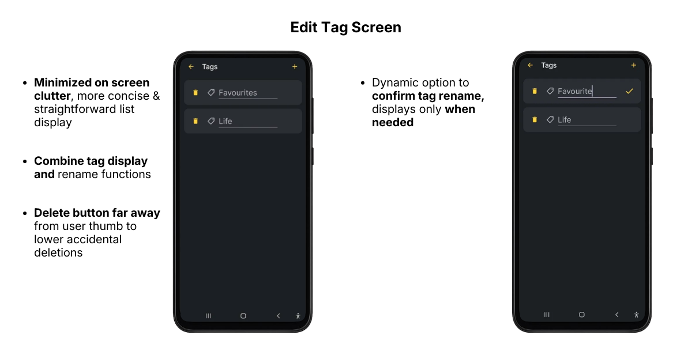
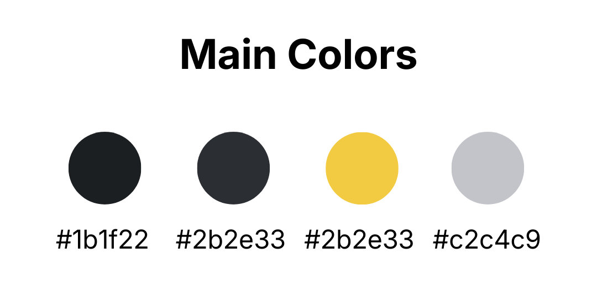
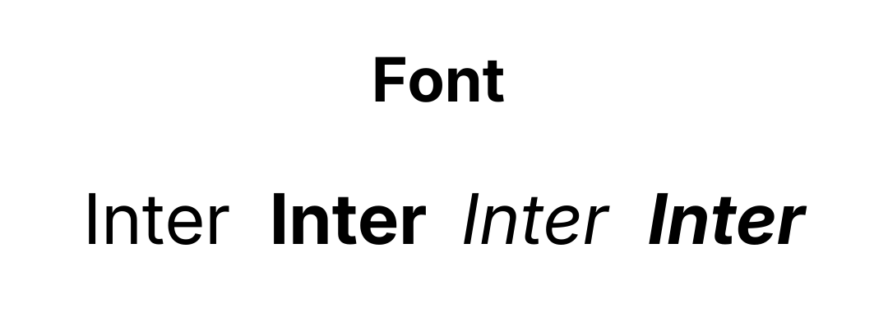

LumoNote is a
feature rich note-taking mobile app.
It sits in that sweet spot between a simple note-taking app and one that
borders on a word processor like Microsoft Word.
This was an
exploratory project
undertaken with a focus on
refining my process and
expanding my knowledge and skill
as both a
UI/UX Designer and
Software Developer.

The Problem.
A note app is an essential tool everyone uses in their day to day.
Many people like myself use it mostly for
thought organization and
planning.
For some of those people, the ability to
freely combine and customize how note elements are presented
is a must, without unnecessarily complex features
getting in the way.
However, many note apps are either
too simple
or
too complex,
sometimes choosing to
separate certain note elements
into a separate note type altogether.
I used this issue as a jumping off point to
develop my first prototype
of the product for testing.
Constraints
As both the
designer and
developer,
the outcome was limited by
time and
my current skill level.
Some potential features had to be shelved, and
high impact features were prioritized
to be developed and tested in a short time frame.
Crafting My Experience Into The Target User
The project was built on these key assumptions about the user:
Organization, simplicity, approachability and
speed
is highly valued,
The combination of checklists and other key note elements
is highly valued,
I sought references for
simple note app designs, and
analyzed note apps like
Google Keep Notes to understand their
strengths and weaknesses in the context of the problem.
I had these key takeaways from Google Keep Notes:
While it was sufficiently
simple, approachable,
had
note organization
as well as many key note-taking features
(rich text editing, undo and redo system, etc),
It had
clear separation between text and other features
such as
images, checklists, and links,
limiting the user's ability to customize how information was presented.
Crafting LumoNote's Design
The LumoNote
name
was the first place I started. My mind wandered:
Luminous, Illumination + Notes
➜
LumoNote
➜
Illuminate your notes and thoughts
With the app's theme and concept in place, I got to work on some low fidelity wireframes
tailored to the user's needs.
The Main Screens

This is the first thing the users see when opening the app.
My priority here was to
limit the clutter on screen
and create a
simple and approachable experience
to avoid overwhelm.
Key Ideas:
Notes
capture the user's eye first as the app's core functionality
The
add notes button
jumps out at you as something to interact with, prompting the user to interact
All possible features are visible
without feeling crowded and
can be accessed in a simple 1-2 taps
Viewing any main screen is done by simply
clicking the icon at the bottom
Visible Features:
Pinning
allows note prioritization (organization)
The Calendar and
View Notes
main screens would allow multiple ways of quickly accessing existing notes (speed)
Search
is another way of quickly finding and accessing existing notes (speed)
The design went through some more changes during the development of the app,
applying colors and the like.
The most recent design had a couple key changes.

The Note Taking Experience
The Note Screen is where the user spends most of their time.
Due to its importance, I spent a lot of time on this screen with a key focus on
simplicity
and
approachability.

Key Ideas:
As the note content is the most important element, the
note display takes up most of the screen
The note
supports combinations of different note elements
(text, images, checklists, etc)
Undo and Redo supported
Text formatting is narrowed down to basic text editing tools,
but isn't lacking key
note-taking features. Decent organization of note content can be accomplished with just
title and subtitle text sizes, bold, italics, underline, clearing font styles and bullets
After some testing and overcoming development issues, the design had undergone a
few more changes.

The Tag Screen
This was a later addition, and is accessible from both the
View Notes and
Edit Notes
Screens.
Key Idea:
To
avoid clutter, the
tag management functionality is
separated into its own independent screen
Visible Features:
The user can easily
delete, rename or
add new tags
for their notes to
help with note organization
At first I wanted to
follow a similar display style
to how tags were displayed on the
View Notes Screen.

But after further contemplation and analyzing how similar apps designed this type of screen,
I went with a
simple list structure instead,
keeping things straightforward.

Visual Design Decisions
The concept of
illuminating the user's thoughts
was combined with a
sleek, modern look and high contrast
so everything jumps out at you.
Conceptually, it can be seen as
elements shining or glowing (are luminous)
against
the dark background.


The
golden yellow gives off a warm feeling
and is striking against a
cooler, blue-black background.
The
light elements on a dark background also
reduces eye strain.
Note-taking can be a
screen intensive task.
The Inter font:
is very
easy to read,
supports
bold, italics, underline
and different types of
capitalization,
and gives a
clean, modern tech feel.
Development
I built the project using
Kotlin
for the functionality and
XML Layouts
for the UI.
I was
new to mobile design and development
when I started, and being both the designer
and developer had a real effect on my design decisions.
My
lack of experience with the platform
made it difficult to
accurately assess how
possible it would be implement certain features in the way I had designed them.
I found myself going back to
simplify elements of the design
so they could be implemented and tested within the time frame.
However, I see this as a
constraint that pushed me toward simpler solutions
rather than a failure.
Many times this turned out well for the project and
forced me to get more creative.
I believe building this skill only serves me well for future projects.
I attempted to
use the prototype in my day to day
to test its long term usability.
Some things stood out to me in particular:
Due to the complexities of text editing in android, a lot more work needs to be put in to
stabilize the note elements
so they behave more predictibly when used with each other.
There needs to be
more error messages and other forms of feedback
so the user is well informed of the state of things within the app to lower confusion.
I
barely used the Calendar screen,
so it wasn't ultimately contributing to the goals of the app
as much as I hoped it would. It can be replaced with a more useful feature.
My biggest takeaways from working on LumoNote would be that:
Further research into the target user would have allowed for a
more accurate mapping of problem to solution,
something I highly value.
Building what I designed gave me a much more
grounded sense of what is actually practical in UI and UX decisions.
I'll carry that into future projects even when I'm not the developer.
I also learned that
documenting as I go would have made writing on LumoNote much easier,
especially regarding collecting design iterations and tracking my decisions and reasoning.
I'll be sure to be more diligent with this.